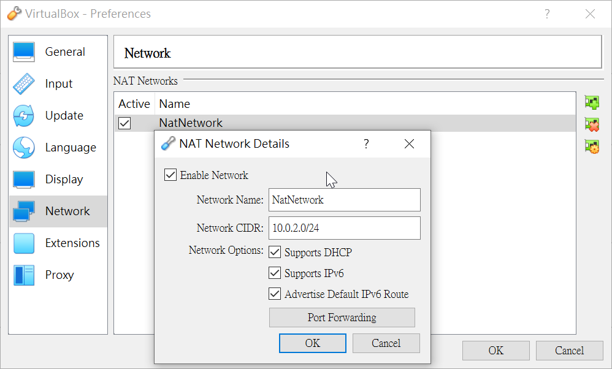
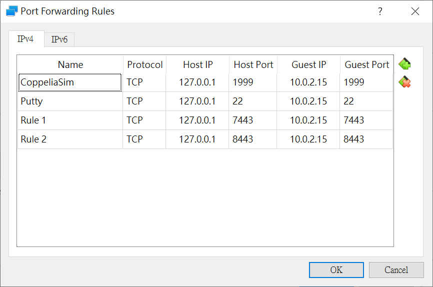
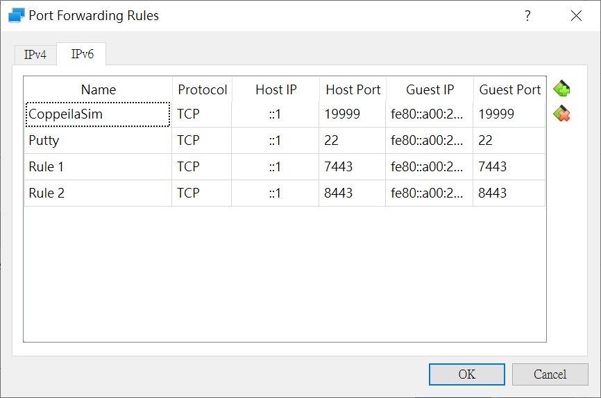
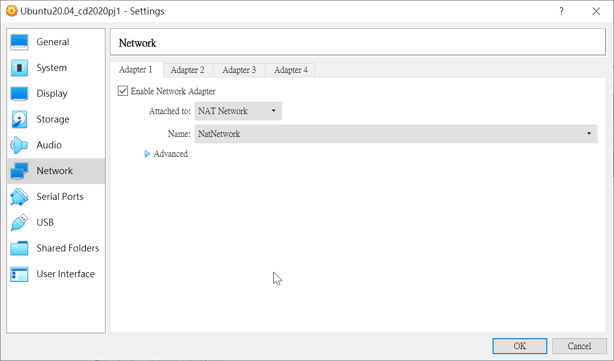
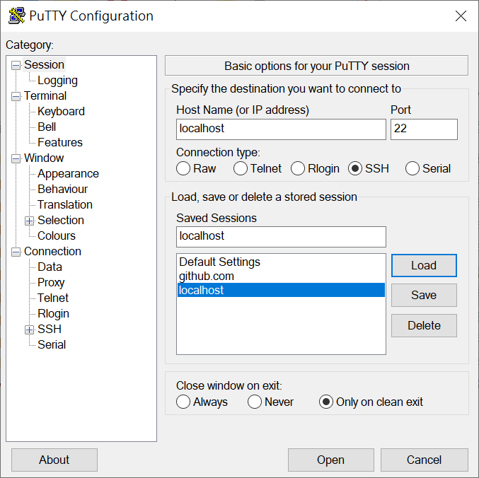
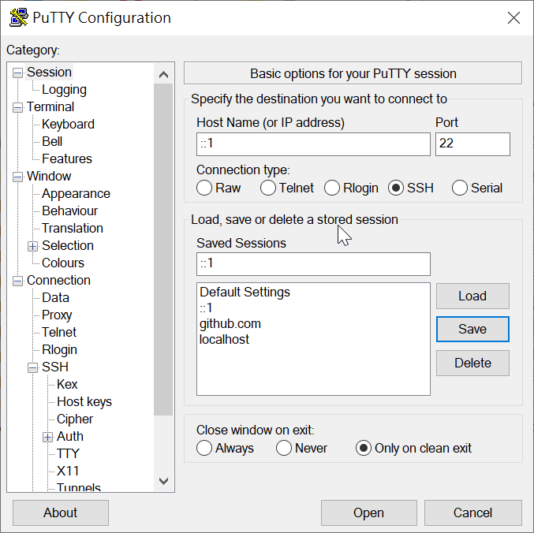
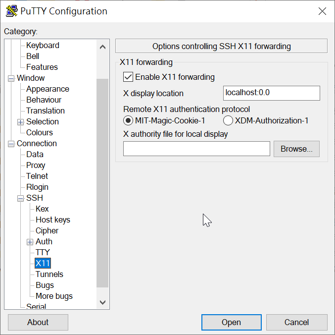
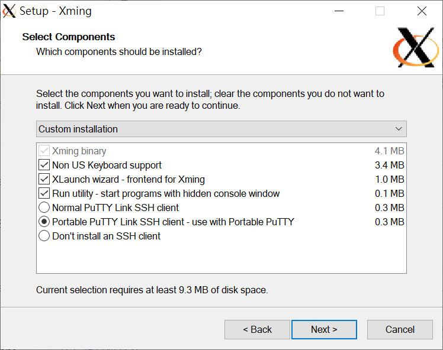

CMS <<
Previous Next >> 虛擬主機 Q&A
VirtualBox
Setting VirtualBox Network
在VirtualBox→Files→Preferences→Network
新增一個網路設定，支援DHCP和IPV6

再到cd2020pj1的虛擬主機設定NAT的Port號
IPv4設定：Guest IP是透過ifconfig查出來(IPv6的也是)

IPv6設定

Ubuntu 20.04的網路設定

P.S. Guest IP 的部分可以在虛擬主機開機的狀態下進行修改設定
IP 查詢
ifconfig
若跳出尚未安裝net-tools的話請安裝
sudo apt install net-tools
若在IPv6環境下有跳出網路錯誤
- IPv6環境設定是否正確
請到 /etc/netplan 目錄下檢查 00-installer-config.yaml 檔案內的設定
cd /etc/netplan
sudo vi 00-installer-config.yaml
00-installer-config.yaml
# This is the network config written by 'subiquity'
network:
ethernets:
enpes3:
dhcp4: true
dhcp6: true
nameservers:
addresses:
- 2001:b000:168::1
version: 2
編輯完成後:wq跳出編輯並儲存，並更新netplan設定
sudo netplan apply
- proxy問題
請到 /etc/apt/apt.conf.d 目錄下檢查是否有proxy.conf檔案，若沒有，請用新增(直接用vi編輯器開啟proxy.conf就會自動新增)
cd /etc/apt/apt.conf.d
sudo vi proxy.conf
proxy.conf的檔案內容
Acquire::http::proxy "http://[2001:288:6004:17::填port號]:3128";
先增完內容後要更新apt
sudo apt update
網路設定完成後可以啟動wsgi.py
再用電腦上的網頁(不是虛擬主機的網頁)到 https://localhost:8443/看是否成功連上，如果成功連上後就換putty
Putty設定
IPv4
Host Name：localhost
Port：22
Connection type：SSH

IPv6
Host Name：::1
Port：22
Connection type：SSH

X11(IPv4或IPv6設定都一樣)
▣Enable X11 forwarding
X display location：localhost:0.0

Xming
安裝Xming
直接安裝後搬移至可攜
或是直接安裝在隨身碟成可攜

安裝完成後執行XLaunch.exe，全部為預設設定。
在putty執行xtrem看是否會成功跳出
File Manager
執行nautilus若無法執行，請安裝nautilus
sudo apt install nautilus
安裝完成後再執行一次nautilus，正常的話就會跳出FileManager
CoppeliaSim
到coppeliasim的目錄下開啟coppeliaSim.sh的檔案
./coppeliaSim.sh
之後就會開啟CoppeilaSim了
CMS <<
Previous Next >> 虛擬主機 Q&A